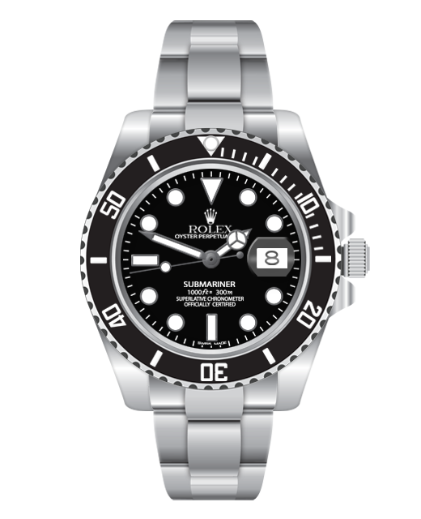

39 700$
La nouvelle montre Rolex Oyster Perpetual Superlative se distingue par son
élégance intemporelle. Son fond vert foncé crée un contraste saisissant
avec le cadran doré, mettant en valeur les index lumineux et les aiguilles
précises. Le boîtier en or et le bracelet assorti ajoutent une touche de luxe,
reflétant la qualité distinctive de Rolex. Avec un mouvement automatique
superlatif, cette montre allie style et performance. Un équilibre parfait
entre design sophistiqué et fonctionnalité exceptionnelle.
9400$
La montre Rolex Oyster Perpetual Submariner argentée marie élégance et robustesse
avec son boîtier en acier inoxydable, sa lunette tournante et son cadran argenté
lumineux. Elle allie style classique et fonctionnalité. Son mouvement automatique
assure une précision remarquable, tandis que le bracelet solide et le fermoir
Glide lock offrent un ajustement optimal. Cette montre incarne l'essence de la
fiabilité et du design intemporel de Rolex.

16 200$
La Rolex Oyster Perpetual Submariner dorée et bleu marine allie luxe et
fonctionnalité. Son boîtier en or offre une esthétique raffinée, tandis que la
lunette tournante bleu marine ajoute une touche de sophistication. Le cadran
bleu marine, orné d'index lumineux et d'une aiguille distinctive, assure une
lisibilité optimale. Le mariage élégant du doré et du bleu marine, associé à
la précision du mouvement automatique, fait de cette montre une pièce exceptionnelle
qui allie style et performance.